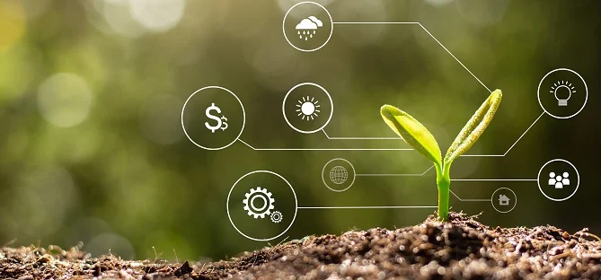
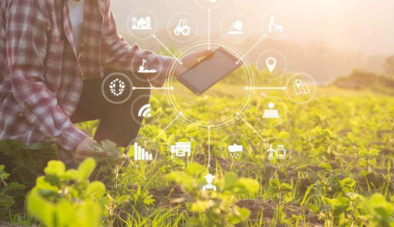
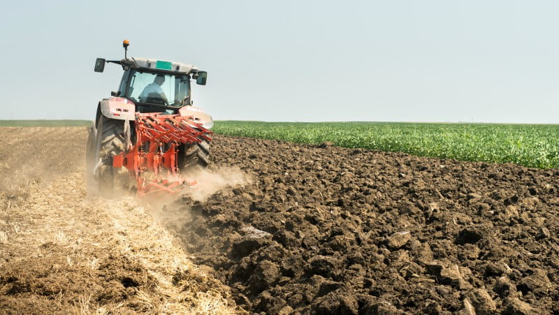

Um dos momentos mais importantes do processo de evolução da agricultura ao longo da história foi, sem dúvidas, aquilo que ficou conhecido como a Revolução Agrícola. Podemos dizer que, com o passar do tempo, várias revoluções agrícolas sucederam-se, mas a principal delas ocorreu a partir da Revolução Industrial.
A tecnologia agrícola hoje inclui: o uso de diversos tipos de sensores, utilização de máquinas e sistemas integrados. Atualmente a rotina das grandes plantações tem implementado sofisticadas tecnologias, como o uso da robótica e principalmente drones, que têm revolucionado os mais diversos tipos de processos agrícolas.
A agricultura iniciou-se especialmente em razão da fixação da população humana. A partir do fim do nomadismo, o ser humano sentiu a necessidade de cultivar seus próprios alimentos de forma fixa, ou seja, ao contrário do processo de coleta que ocorria nas sociedades nômades.
As atividades agrícolas que correspondem a todas as fases de plantio (preparação, correção, adubação, plantio, colheita e venda) dividem-se em dois tipos, geralmente segundo o tamanho da área e da produtividade alcançada: Não pare agora...
A história da produção agrícola no Brasil começou pouco depois da chegada dos portugueses. Teve início na região Nordeste, no século XVI, com o cultivo da cana-de-açúcar. As primeiras mudas chegaram ao Brasil em 1933. 
- Agricultura tradicional.
- Agricultura moderna.
- Agricultura familiar.
- Agricultura patronal.
- Agricultura orgânica.
As mudanças envolvem áreas de expansão e de conversão de uso, especialmente na substituição de pastagens pela agricultura de larga escala, favorecidas pela mecanização e intensificação da produção.
As mudanças envolvem áreas de expansão e de conversão de uso, especialmente na substituição de pastagens pela agricultura de larga escala, favorecidas pela mecanização e intensificação da produção.
Por fim, salienta-se que foram cinco períodos significativos na história da agricultura, como o Neolítico (8.000 a.C. até 5.000 a.C.), Idade Antiga (4.000 a.C. até 476), Idade Média (476 a 1453), Idade Moderna (1453 a 1789), Idade Contemporânea (a partir de 1789).
Hoje os agricultores planejam sua produção com o apoio de sementes tratadas e melhoradas geneticamente. Além disso, empregam equipamentos para operações no campo e instrumentos que monitoram o desenvolvimento das plantas.
Em algum momento, há cerca de 12 mil anos, os humanos começaram a plantar. A agricultura foi inventada várias vezes ao longo da história humana e em diferentes partes do mundo.
Todas as informações, foram retiradas do Google Pesquisas...